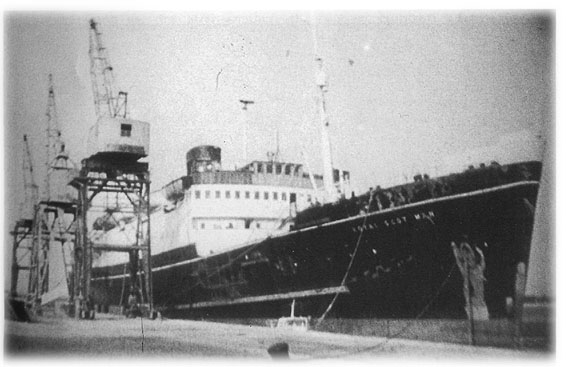

Chapter 16
Launching the Sea Org
'Hearing of L. Ron Hubbard's plans for further exploration and research into, among other things, past civilizations, many Scientologists wanted to join him and help. They adopted the name "Sea Organization" . . . Free of organizational duties and aided by the first Sea Org members, L. Ron Hubbard now had the time and facilities to confirm in the physical universe some of the events and places he had encountered in his journeys down the track of time . . .' (Mission Into Time)
 (Scientology's account of the years 1967-68.)
(Scientology's account of the years 1967-68.)
In 1967, L. Ron Hubbard was fifty-six years old, the father of seven children and a grandfather several times over. With a loyal wife, a home in England and four children still at school, he was at an age when most men put down roots and plan nothing more ambitious than a comfortable retirement. But he was not like most men.
In 1967, L. Ron Hubbard raised a private navy, appointed himself Commodore, donned a dashing uniform of his own design and set forth on an extraordinary odyssey, leading a fleet of ships across the oceans variously pursued by the CIA, the FBI, the international press and a miscellany of suspicious government and maritime agencies. He had begun making secret plans to set up the 'Sea Organization' on his return from Rhodesia in the summer of 1966, shrouding the whole operation with layer upon layer of duplicity. His intention was that the public should believe that he was returning to his former 'profession', that of an explorer, and accordingly, in September 1966, Hubbard announced his resignation as President of the Church of Scientology. This charade was supported by the explanation that the church was sufficiently well established to survive without his leadership. In preparation for his anticipated resignation a special committee had been set up to investigate how much the church owed its founder; it was decided the figure was around $13 million, but Hubbard, in his benevolence, forgave the debt.
Still a member of the Explorers Club, Hubbard applied for permission to carry the club flag on his forthcoming 'Hubbard
Geological Survey Expedition'. Its purpose, he explained, was to conduct a geological survey from Italy, through Greece and Egypt to the Gulf of Aden and down the east coast of Africa: 'Samples of rock types, formations, and soils will be taken in order to draw a picture of an area which has been the scene of the earlier and basic civilizations of the planet and from which some conclusions may possibly be made relating to geological dispositions requisite for civilized growth.'
This highfalutin nonsense sufficiently impressed the Explorers Club for the expedition to be awarded the club flag. [The club could not, however, he said to examine such applications very scrupulously - Hubbard had also been awarded the flag in 1961 for another entirely fictitious venture - the 'Ocean Archaeological Expedition', allegedly set up to explore submerged cities in the Caribbean, Mediterranean and adjacent waters.[1]]
On 22 November 1966, the Hubbard Explorational Company Limited was incorporated at Companies House in London. The directors were L. Ron Hubbard, described as expedition supervisor, and Mary Sue Hubbard, the company secretary. The aims of the company were to 'explore oceans, seas, lakes, rivers and waters, lands and buildings in any part of the world and to seek for, survey, examine and test properties of all kinds'.
Hubbard had no more intention of conducting geological surveys than he had of relinquishing control of the Church of Scientology and its handsome income. His real objective was to shake off the fetters on his activities and ambitions imposed by tiresome land-based bureaucracies; his vision was of a domain of his own creation on the freedom of the high seas, connected by sophisticated coded communications to its operations on land. Its purpose would be to propagate Scientology behind a screen of business management courses.
Before the end of 1966, the 'Sea Org' - as it would inevitably become known - had secretly purchased its first ship, the Enchanter, a forty-ton sea-going schooner. To further obscure his involvement, Hubbard asked his friend Ray Kemp to be a part owner. Kemp was the man who believed that Hubbard could move clouds with the power of his mind and when he showed up at Saint Hill to sign for the Enchanter he swore that Hubbard played a little magical trick on him: 'We'd been sitting talking for hours and it was getting dark when he said, "Well I guess we'd better get this thing signed." I said, "Do you have a pen?" and he said, "Yes, it's over there." I went to pick up the pen on his desk and it disappeared. I thought at first it was the light, but I tried three times to pick up the pen and each time it was not there and I realized he was making it disappear. In the end I said to Ron, "If you'll just leave the bloody pen still for a moment, I'll sign". He could do fun things like that, he was just playing a game.'[2]
_______________
1. Letter from assistant secretary, Explorers Club, 8 December 1966
2. Interview with Kemp
Shortly after the purchase of the Enchanter, the Hubbard Explorational Company bought an old, rusty North Sea trawler, the 414-ton Avon River, moored at Hull, a busy seaport on the north-east coast of England. Hubbard then flew to Tangier in Morocco, where he planned to continue his 'research', leaving his family at Saint Hill Manor. Mary Sue wanted to stay behind because Diana, star pupil at the local dancing school, had been chosen to present a bouquet to Princess Margaret, who was due to open the Genée Theatre in East Grinstead a few weeks later.
Before being driven to the airport, Hubbard scribbled instructions for various members of the 'sea project'. One of them was Virginia Downsborough, a plump and cheerful New Yorker who had been working as an auditor at Saint Hill for nearly three years. Virginia was never entirely sure why she had been honoured with an invitation to join the project, unless it was because she came from a sailing family and knew a little about ships and knots. 'At that time the sea project was just a few of us who would get together in the garage and learn how to tie knots and read a pilot. I bought a little sailing boat and sailed it at weekends, but that was about it. Ron always worked way down the line - he knew what he intended to do, but he never laid it out for us.
'After he had gone I was given a sealed envelope with his initials on. Inside were my orders. I had to go to Hull, get the Enchanter ready for sea and sail her to Gibraltar for a refit. Ron gave me a list of things he wanted from Saint Hill, mainly personal possessions and clothes, which I was to bring with me. I left for Hull next day.'
Scientologists were in the habit of following Ron's orders unhesitatingly, no matter how difficult the task, or how ill-equipped they were to carry them out. Virginia Downsborough held a masters degree in education and had run a child development department in a New York school before coming to Saint Hill; nevertheless she set out for Hull without a second thought. 'A lot of things needed to be done before the Enchanter was ready to sail,' she recalled, 'so I lived on the Avon River, which was moored alongside and was absolutely filthy, for a couple of weeks while the work was being carried out.'
The Enchanter sailed in the New Year with a hired skipper and a novice crew of four Scientologists, including Downsborough. In the light of forthcoming Sea Org voyages, it was a comparatively uneventful trip, apart from losing most of the fuel at sea somewhere off the coast of Portugal. After putting in briefly at Oporto, the Enchanter arrived safely in Gibraltar, only to discover there was no room in the ways. A message arrived from a Hubbard aide in Tangier saying that Ron was ill and they were to continue to Las Palmas, in the Canary Islands.
'We got the Enchanter on the ways in Las Palmas,' said Downsborough, 'and we had not been there very long before Ron turned up. Bill Robertson - another Scientologist - and myself went to the post office to post some letters and discovered a telegram there from Ron saying that he was arriving in Las Palmas almost at that minute and wanted to be met. We jumped into a taxi and got to the airport just in time to pick him up as he was coming through Customs. We found him a hotel in Las Palmas and next day I went back to see if he was all right, because he did not seem to be too well.
'When I went in to his room there were drugs of all kinds everywhere. He seemed to be taking about sixty thousand different pills. I was appalled, particularly after listening to all his tirades against drugs and the medical profession. There was something very wrong with him, but I didn't know what it was except that he was in a state of deep depression; he told me he didn't have any more gains and he wanted to die. That's what he said: "I want to die."'
It was important for Hubbard to be discovered in this dramatically debilitated condition at this time, for it would soon be announced to fellow Scientologists that he had completed 'a research accomplishment of immense magnitude' described, somewhat inscrutably, as the 'Wall of Fire'. This was the OT3 (Operating Thetan Section Three) material, in which were contained 'the secrets of a disaster which resulted in the decay of life as we know it in this sector of the galaxy'.[3] Hubbard, it was said, was the 'first person in millions of years' to map a precise route through the 'Wall of Fire'. Having done so, his OT power had been increased to such an extent that he was at grave risk of accidental injury to his body; indeed, he had broken his back, a knee and an arm during the course of his research.
Virginia Downsborough did not observe any broken limbs, but recognized that Ron needed nursing. 'I moved into an adjoining room in the hotel to take care of him. He refused to eat the hotel food, so I got a little hotplate and cooked meals for him in the room, simple things, things that he liked. My main concern was to try and get him off all the pills he was on and persuade him that there was still plenty for him to do. He was sleeping a lot and refused to get out of bed.
'I don't know what drugs he was taking - they certainly weren't making him high - but I knew I had to get him over it. I discussed it with him and gradually took them away. He didn't carry on about it. He had brought a great pile of unopened mail with him from Tangier, a lot of it from Mary Sue, and I got him to start reading her letters. After about three weeks he decided he would get out of bed and he started taking little walks and then he got interested in what was happening on the Enchanter and after that he was all right.'
_______________
3. Mission into Time, L. Ron Hubbard, 1973
Mary Sue flew in to Las Palmas as soon as Ron was back on his feet and Virginia Downsborough was instructed to find the Hubbards a house. She rented the Villa Estrella, a pretty white-painted hacienda with a red-tiled roof on a rocky promontory facing the sea, about forty-five minutes drive from Las Palmas. 'I cooked dinner for them at the house every evening,' she said. 'Ron used to like to sit up and talk half the night long after Mary Sue had gone to bed. He had this intense ability to communicate and it was fascinating to listen to him. I was intrigued by the concept he presented of himself as being a constant victim of women.
'He talked a lot about Sara Northrup and seemed to want to make sure that I knew he had never married her. I didn't know why it was so important to him; I'd never met Sara and I couldn't have cared less, but he wanted to persuade me that the marriage had never taken place. When he talked about his first wife, the picture he put out of himself was of this poor wounded fellow coming home from the war and being abandoned by his wife and family because he would be a drain on them. He said he had planned every move along the way with Mary Sue to avoid being victimized again.'[4]
When the Enchanter came off the ways in the harbour at Las Palmas, Hubbard took her out on extended cruises round the Canary Islands to search for gold he had buried in previous lives. 'He would draw little maps for us,' said Virginia Downsborough, 'and we would be sent off to dig for buried treasure. He told us he was hoping to replace the Enchanter's ballast with solid gold. I thought it was great fun - the best show on earth.'
All these activities were supposed to remain a closely guarded secret and Hubbard insisted on the use of elaborate codes in Sea Org communications. In a despatch to Saint Hill he urged his followers not to feel '007ish and silly' about security. 'When you have had the close calls I have had in intelligence through security failures,' he said, 'you begin to believe there is something in the subject. I was once in 1940 ordered out on a secret mission by the US to a hostile foreign land with whom we were not yet at war. It was vital to mask my purpose there. It would have been fatal had I been known to have been a naval officer. On a hunch I didn't leave at once and the following day the US sent a letter to me that had I left would have been forwarded to me in that land, addressing me with full rank and title, informing me to wear white cap covers after April 15 in Washington. Had I departed, that letter, following me, would have sentenced me to death before a firing squad!'[5]
 While Hubbard was in Las Palmas he developed phobias about dust and smells
which were the cause of frequent explosive temper tantrums. He was always
complaining that his clothes smelled of soap or he was being choked by dust
that no one else could detect. No
While Hubbard was in Las Palmas he developed phobias about dust and smells
which were the cause of frequent explosive temper tantrums. He was always
complaining that his clothes smelled of soap or he was being choked by dust
that no one else could detect. No
_______________
4. Interview with Virginia Downsborough, Santa Barbera, CA., August 1986
5. Despatch from LRH, 22 April 1967
matter how frequently the Enchanter's decks were scrubbed, she was never clean enough for the Commodore. Similarly, the routine drive between the harbour and the Villa Estrella became an ordeal for everyone in the car. 'Sometimes I thought we'd never get there,' said Virginia Downsborough. 'Every few miles he would insist on stopping because there was dust in the air conditioner. He would get into such a rage that on occasions I thought he was going to tear the car apart.'
In April 1967, the Avon River steamed into the harbour at Las Palmas after a voyage from Hull which the skipper, Captain John Jones, later described as the 'strangest trip of my life'. Apart from the chief engineer, Jones was the only professional seaman on board. 'My crew were sixteen men and four women Scientologists who wouldn't know a trawler from a tramcar,' he told a reporter from the Daily Mirror on his return to England.
Captain Jones should perhaps have foreseen the difficulties when he signed on for the voyage and was informed that he would be expected to run the ship according to the rules of The Org Book, a sailing manual written by the founder of the Church of Scientology and therefore considered by Scientologists to be infallible gospel. 'I was instructed not to use any electrical equipment, apart from lights, radio and direction finder. We had radar and other advanced equipment which I was not allowed to use. I was told it was all in The Org Book, which was to be obeyed without question.'
Following the advice in this esteemed manual, the Avon River bumped the dock in Hull as she was getting under way and had barely left the Humber estuary before the Scientologist navigator, using the navigational system advocated by Hubbard, confessed that he was lost. 'I stuck to my watch and sextant,' said Captain Jones, 'so at least I knew where we were.'
As the old trawler laboured into the wind-flecked waters of the English Channel, a disagreement arose between the senior Scientologist on board and the Captain about who was in command. By the time the Avon River put into Falmouth to re-fuel, both the Captain and the chief engineer were threatening to pack their bags and leave the ship. Frantic telephone calls to East Grinstead eventually led to the protesting Scientologist being ordered to return to Saint Hill and the smoothing of Captain Jones's ruffled feathers. The rest of the trip passed off without incident, although the two seamen remained utterly mystified by their crew and in particular by the hours they spent fiddling with their E-meters.[6]
At Las Palmas, the Avon River was hauled up on the slips recently vacated by the Enchanter and prepared for a major re-fit. A working party of bright-eyed sea project members had already arrived in the
_______________
6. Cults of Unreason, Christopher Evans, 1973
Canaries, among them Amos Jessup, a philosophy major from Connecticut. The son of a senior editor on Life magazine, Jessup had gone to Saint Hill in 1966, while he was studying in Oxford, to try and get his young brother out of Scientology and instead had become converted himself. 'I was soon convinced', he said, 'that instead of being some dangerous cult it was an important advance in philosophy.
'I was clear by the spring of '67 and when I heard that LRH was looking for personnel for a communications vessel I immediately volunteered and was sent to Las Palmas. We were all given a "shore story" so that no one would know that we were Scientologists; we were told to say that we were working for the Hubbard Explorational Company on archaeological research.
'On the day we arrived, the Avon River was being hauled up on the slips. She looked like what she was - an old, worn-out, oil-soaked, rust-flaked steam trawler. Our job was to give her a complete overhaul. We sand-blasted her from stem to stern, painted her, put bunks in what had been the rope locker, converted the liver oil boiling room into additional accommodation, put decks in the cargo holds to make space for offices. LRH designed a number of improvements - a larger rudder and a system of lifts to hoist small boats aboard.'[7]
Hubbard would show up every couple of days to check on the progress of the work, but it was never going ahead fast enough and more sea project members were constantly being flown in to Las Palmas to join the work-force. Hana Eltringham, a former nurse from South Africa, arrived in August. 'At first sight the ship looked terrible, all streaked with rust,' she said. 'You had to climb a long, shaky ladder to get up on to the deck and as I got over the side I could see everything was covered in sand from the sand-blasting and there were people sleeping on the sand, obviously exhausted.
'Nevertheless, it was a tremendous thrill to be there. It was a great honour to be invited to join the sea project; we were an elite, like the Marine Corps. All of us were true and tried Scientologists, highly motivated, and to me it was high adventure.'
After working as a deck hand for a couple of weeks, Hana was promoted to ethics officer. 'My job was to run round making sure the crew weren't goofing. I felt I was responsible for catching errors before he did because he would get very upset - he would literally scream and shout - if something was not being done right. I was mostly scared of him in those days.
'One afternoon I was standing on the deck with a clipboard waiting for him to come on board and I knew something was wrong because I saw his face start to contort when he was still 15 or 20 yards away, walking towards the slips. As he came up to the ship he started
_______________
7. Interview with Amos Jessup, San Diego, July 1986
shouting, filling his lungs and bellowing "What are they doing? Why are they doing that?" and pointing to the side of the ship. He came up the ladder still screaming in a kind of frenzy. I didn't know what was the matter and he told me to look over the side of the ship. I stuck my head over to see what the hell he was screaming about. The painters who were putting white paint on the hull were using old rollers and the paint had a kind of furry coat on it from the rollers. He'd seen that from many yards away. It was extraordinary. I was awed.'[8]
Such incidents inevitably led to the offenders being assigned a 'lower condition', the penalties for which were by then routinely formalized. The least serious was 'emergency' followed by 'liability', in which hapless state the miscreant forfeited pay, was confined to 'org premises' and had to wear the infamous dirty grey rag on one arm. In a condition of 'treason', all uniforms and insignia were removed and the rag was replaced by a black mark on the left check. In 'doubt', the offender was fined, barred from the org and could not be communicated with. Lastly came the dreaded 'enemy' - 'May be deprived of property or injured by any means by any Scientologist without any discipline of the Scientologist. May be tricked, sued or lied to or destroyed.'
Even though Hubbard had 'resigned' as president of the Church of Scientology, the flow of edicts continued uninterrupted and he reminded Scientologists of the penalties for lower conditions in a policy letter dictated at the Villa Estrella in Las Palmas. He also found time to record a taped lecture in which he warned of a world-wide conspiracy to destroy Scientology. The resourceful Mary Sue had apparently traced the conspiracy to the very highest levels, to a cabal of international bankers and newspaper barons sufficiently powerful to control many heads of state, among them the British Prime Minister, Harold Wilson.
While Hubbard was fulminating against international conspiracies and bellowing at his amateur work-force as they struggled to prepare the Avon River for sea, good news arrived from a 'mission' in Britain (tasks undertaken on Hubbard's behalf were always aggrandized as 'missions'). For many months two senior Scientologists, Joe van Staden and Ron Pook, had been scouring European ports for a big ship, something like a cruise liner, which could be used as the Sea Org's flagship. In September, they reported by telex that they had found, laid up in Aberdeen, just the ship that Ron was looking for. She was the Royal Scotsman, a 3280-ton motor vessel built in 1936 and most recently in service as a cattle ferry on the Irish Channel crossing. Despite her age, she was in good condition and could probably be bought, von Staden and Pook thought, for not much more than £60,000. To Hubbard, the money was insignificant; Saint Hill alone was taking in around £40,000 a week in fees. He immediately
_______________
8. Interview with Hana Eltringham, Los Angeles, March 1986
instructed von Staden and Pook to start negotiating the purchase and to make arrangements for the Royal Scotsman to join the other ships in Las Palmas, although Avon River was still high and dry on the slips.
It was only natural that the Commodore, who was not the most patient of men, would want his fleet assembled at the earliest opportunity and he was constantly irritated by what he considered to be unnecessary delays in the Avon River's refit. By this time there were thirty-five Scientologists working on the ship from dawn to dusk, sawing, painting, chipping, scrubbing and polishing. The bridge had been completely reconstructed and fitted with new compasses and navigation equipment, all the cabins had been steam cleaned, the fish hold was converted into auditing space with rows of built-in desks, and there was a research office for the Commodore just forward of the bridge.
When at last she was ready for service, the re-launching was rather less than an outstanding success. As the trawler, sprucely whitepainted, slid down the ways, it was realized too late that no precautions had been taken to restrain her; she drifted helplessly in the bay until a boat could be found to push her towards a mooring buoy. To compound this embarrassing indignity, the Enchanter appeared over the horizon under tow, having broken down while out searching for the treasure buried by the Commodore in previous lives. Two days later, both ships set sail, somewhat uncertainly, for Gibraltar.
The Royal Scotsman, meanwhile, had left Aberdeen but had run foul of the Board of Trade, the British agency responsible for the safety of ships registered in the United Kingdom. On 7 November, a solicitor acting for the new owners of the Royal Scotsman, had telephoned the Board of Trade in London and asked if the ship could be re-registered as a pleasure yacht and cleared for a voyage to Gibraltar. He was told that such a re-classification would entail considerable modifications - under the Safety of Life at Sea Convention of 1960, the ship would need valid load-line, cargo ship construction, safety equipment and radio certificates.
The Sea Org decided to try another tack: a couple of days later, the Royal Scotsman put in to Southampton on the south coast and an attempt was made to clear her with the port authorities as a whaling ship. This sudden transformation not unnaturally aroused suspicions and the authorities responded by slapping a provisional detention order on the ship, preventing her from putting to sea until necessary safety provisions had been complied with.
This news, nervously conveyed to L. Ron Hubbard in Gibraltar, produced a predictable explosion. Hubbard railed at the stupidity of the people who were supposed to be helping him and fumed about the injustice of being prevented from doing what he wanted with his own
ship. When he had calmed down, he decided that the only solution was to fly to England with a hand-picked crew, take command of the Royal Scotsman and sail her away, protests from the Board of Trade notwithstanding.
Shortly afterwards, a curious party of sailors in blue serge suits, white polo neck sweaters and little tar hats arrived at Gatwick airport on a flight from Gibraltar. They were led by a large, red-faced man wearing a white peaked cap and carrying a letter of authority explaining that they were the delivery crew for a vessel under the seal of the Hubbard Explorational Company. In the customs hall, an officer of HM Customs and Excise glanced briefly at the letter brandished by the red-faced man and casually inquired: 'Is this the same Hubbard who has the place at East Grinstead?' 'Oh yes,' the red-faced man boomed, 'Mr Hubbard is an explorer himself.' Amos Jessup, who was standing directly behind Hubbard, marvelled at his composure.
|
 |
| Rare picture of the 'mystery ship', the Royal Scotman, in which the commodore sailed the Mediterranean. (Granada Television Ltd) |
The improbable sailors boarded a coach waiting outside the airport and were driven straight to Southampton Docks, to the berth occupied by the Royal Scotsman. 'Everyone climbed out and stared up at this huge ship,' Jessup recalled. 'I was startled and amazed by the size of it. It was three stories high and 357 feet long. I was assigned to be the bos'n. I didn't know all I should have known about bos'ning and I was rather shocked at the magnitude of what I'd been handed.
'After we got on board, LRH called everyone together and had us sit on the staircase between A deck and B deck. He stood at the bottom of the stairs and said, "This may look like a big and overwhelming thing, but don't let it scare you. I've handled ships bigger than this. She handles like a dream, drives like a Cadillac with big twin screws. There's nothing to it." We were already a can-do kind of group, but everyone felt a bit better after that.'
Over the next few days, there was constant activity at the Royal Scotsman's berth. Every few hours a truck would arrive from Saint Hill loaded with filing cabinets which were humped on board. Taxis disgorged eager Saint Hill volunteers, clutching their bags and the 'billion-year contract' which Hubbard had recently introduced as a condition of service in the Sea Org. Mary Sue and the children arrived and took over the upper-deck accommodation which had been reserved for the Hubbard family.
Diana Hubbard was then fifteen, Quentin thirteen, Suzette a year younger and little Arthur just nine years old. They would have the company of a few other children on the ship and a notice was pinned in the saloon explaining how they were to be treated: 'A tutor will be provided for the children, who will be assigned regular hours of work and play. Anyone who deprives a child of his or her work or play will
be assigned to a condition of non-existence. (Penalties for non-existence - Must wear old clothes. May not bathe. Women must not wear make-up or have hair-do's. Men may not shave. No lunch hour . . .)'[9]
Not everyone joining the crew was a volunteer. John McMaster, whom Hubbard had earlier described as the first Pope of the Church of Scientology, had recently fallen into disfavour, probably because he was beginning to become too influential. Slight and golden-haired, McMaster had been touring the world as an evangelist for Scientology, attracting huge audiences, considerable popularity and the dangerous enmity of L. Ron Hubbard. On a brief return visit to Saint Hill, he was abruptly assigned a lower condition, deprived of all his awards and ordered to re-train from scratch.
He would recall his experiences years later with enormous bitterness, contemptuously referring to Hubbard as 'Fatty': 'All of a sudden I was ordered to appear at Saint Hill Manor at nine o'clock on a Sunday morning with all my clothes. There was a big open truck outside being loaded with files and filing cabinets and I was told to get in the back. I had no idea where I was going. By the time we got to Southampton Docks I was frozen, I could hardly move. This was November, don't forget. They got me on to the poop deck and this big fat body appeared. It was Fatty. "Oh, so you've deigned to come, have you?" he said. "Well I'm here, aren't I?" I said. "If you've come to join us, I'll come down and shake your hand," he said. He stepped down, grabbed my hand, realized I was frozen and started screaming and shouting to get me into a warm cabin. I sat in the cabin for about three hours until I had thawed out. I was told that I was going to be a galley hand. By this time I was well used to Hubbard's insanity and there was no way I was going to succumb to it. I wasn't bothered. If they wanted me to clean the heads and scrub the decks, that was fine by me.'[10]
To supplement his inexperienced crew, Hubbard hired a couple of professional seamen, including a chief engineer, but it did not prevent mishaps occurring even before the Royal Scotsman had put to sea. One of the recruits was on duty at the gangplank as Quartermaster and failed to notice until it was too late that the ship's rubbing strake had caught on the edge of the dock as the tide ebbed. A small crowd of stevedores watched with undisguised amusement as the crew of the Royal Scotsman tried to lever their enormous ship off the dock. It was hopeless: the rubbing strake creaked, splintered and finally broke away from the hull.
Hubbard took the opportunity to parade the entire crew on the dockside to point out what had happened and remind them that as thetans all of them must have had seafaring experience in one or another of their past lives. 'The truth of the matter is that you have all
_______________
9. HCO Policy Letter, 26 Sept 1967
10. Interview with McMaster
been around a long time,' he stressed. 'Stop pretending you don't know what it is all about, because you do know what it is all about.' Amos Jessup said everyone felt better afterwards.
While all this was going on, Hubbard had despatched Hana Eltringham on a top secret mission to re-register the Royal Scotsman in Sierra Leone in order to circumvent the attention of the Board of Trade. Hana first flew back to Las Palmas, where she collected a Spanish lawyer who had previously worked for the church, and then together they took a flight to Sierra Leone, a tiny, mosquito-ridden republic on the west coast of Africa. In Freetown, the capital, it took thirty-six hours to complete the paperwork, during which time Hana bought a large Sierra Leonese flag. On 28 November, less than three days after leaving Britain, she was on her way back to Gatwick carrying the ship's new documents. She took a cab from the airport direct to Southampton Docks.
'I arrived back on board at about four o'clock in the afternoon and took the papers straight to LRH, who was having tea in the main dining-room with the ship's officers. He was delighted to see me and very pleased to get the new registration, but as he was reading through the papers his eye caught something and he started to frown. I felt the familiar terror rising. "Did you notice this?" he said, pointing to the name of the ship on the papers. I looked and saw the "s" had been missed out and it was spelled "Royal Scotman". I began to stammer an apology, but he suddenly smiled, grabbed my hand and began pumping it. "Double congratulations," he said. "Now the ship has a new name as well."' He instantly ordered painters to black out the second 's' in the name on the bows, stern, lifeboats and lifebelts.
The following day, the Royal Scotman applied for clearance to sail to Brest in north-west France, for repairs. The port authorities in Southampton had no powers to detain a vessel registered in Sierra Leone and the ship sailed at dusk, raising the Sierra Leonese flag and banging into the fenders in the inner harbour on her way out into Southampton Water. It was to be a hair-raising maiden voyage for the Sea Org's flagship, as Hana Eltringham recounted:
'We sailed out of the channel that evening into an awful storm. The engine room was in a very bad condition; the main engines were not running very well and neither were the generators and because the paint was so dirty in the engine room you couldn't follow which were the water lines and which were the fuel lines. Half-way between Southampton and Brest, one of the generators conked out.
'I was on bridge watch as officer of the deck. We were between three to five miles off the north-west tip of France and I could see ahead, on the port side, the buoys marking the rocky coastline going south. But as we came around to try and get into the estuary towards Brest I
noticed that the red-flashing buoys were swinging across the bows of the ship and I realized we were caught in a rip tide and were being pushed towards the rocks.
'The ship started to wallow very badly and each time she went over she took longer to recover. Although she had stabilizers, she went from a five degree roll to almost a twenty-five degree roll and on the last roll to port she staggered. We were all hanging on to the bridge and at that moment the old man [Hubbard] began screaming at Bill Robertson, the navigator, "Get us on a course out of here! Get us on a course out of here!" He was really bellowing. The ship started to stagger around, very slowly and painfully. It was scary. I was terrified and I think LRH was too, the way he was screaming and holding on to the bridge and glaring at us.
'Once we had got out of it and were about ten miles off the coast steering south, he took the entire bridge watch into the cabin just behind the bridge and told us that due to what had happened and the ship being at risk and not truly seaworthy he had decided not to go into Brest, even though it would be defying orders. We were going to continue south down to the Mediterranean. The way he was telling us was like he was convincing us it was the right thing to do. He went over and over it, to make sure we understood. Then he entered what had happened in the log book, a two- or three-page entry explaining the reasons for not going into Brest, and we all signed it.
'The following day there was another near catastrophe. We were planning to put into Gibraltar to meet up with the Avon River. It was about five or five-thirty in the afternoon and getting dark as we approached the Gibraltar Strait. We were in the northernmost lane entering the Med and we could see there was a storm brewing. The storm came up quickly and the sea was very wild and as we were battling to control the ship the oil lines from the bridge to the engine room lost pressure and the hydraulic steering on the bridge gave way.
'The ship started to drift across the southernmost outgoing lane towards the Moroccan coast. We put our "Not under command" lights on so other ships could see we were drifting and started to work frantically on the back of the poop deck to rig up the emergency steering. It was pouring with rain and very cold. In the middle of all this we were in radio communication with Gibraltar asking for help, for a tug to be sent out to bring us in. They refused. They said that because we had failed to comply with our sailing orders we would not be allowed into any English port. I can remember LRH pleading with them on the radio: "We have wives and children on board, we are at risk." But they would not come to our aid. I was appalled. It was my first major shock.
'We had managed to find all the component parts to hook up the
emergency steering on the aft docking bridge and there we were, Ron, Pook and myself, hanging on to the manual steering wheel trying to steer the ship while someone stood holding an umbrella over us, another shone a torch on a little hand compass and someone else talked on a walkie-talkie to the bridge to the person watching the gyro compass. Mary Sue was running backwards and forwards with cups of steaming hot cocoa.
'I could still hear snatches of LRH talking to Gib on the ship-to-shore radio and I remember standing there, holding on to the steering wheel with aching arms and tears streaming down my face, thinking nobody wants us, where can we go? To be refused help by a British port brought home to me the enormity of our situation and my empathy for the old man increased a thousand fold. He was not wanted in England and he had been kicked out of various places around the world. All I could think about was that no one wanted this brilliant man and the treasures he had to offer.'
Denied entry into Gibraltar, the Royal Scotman continued into the Mediterranean under her emergency steering and set a course for the little principality of Monaco, where Hubbard hoped he would be more welcome. Food and water was running low and the cook was reduced to serving soup made with seawater by the time the ship hove to off Monte Carlo in early December. She was too big to enter the harbour, but the port authorities agreed to her being "re-fuelled and re-provisioned by lighters, and engineers were brought on board to repair the steering. From Monaco, the Royal Scotman sailed to Cagliari in Sardinia, where she docked for the first time since leaving Southampton.
If Hubbard had a reason for visiting Sardinia, he kept it to himself. While they were there, he received a cable which brought on another paroxysm of uncontrolled rage and sent everyone around him diving for cover. The Avon River had been caught in hurricane-force storms north of the Balearic Islands: much of the deck gear had been swept overboard and the terrified crew were very shaken up. As Hubbard read the cable his face began to twitch. He strode to the chart table, stabbed at it madly with his finger and bellowed, 'What were they doing up there?'
John O'Keefe, the unhappy Scientologist who had been given command of the Avon River, had muddled his instructions and was miles off course when he ran into the storm. He should have been far to the south of the Balearics, heading for a rendezvous with the Royal Scotman in Cagliari. Hubbard was still seething when the Avon River finally limped into the harbour at Cagliari. He refused to speak to O'Keefe and ordered a Committee of Evidence (a Com-Ev in Scientology-speak) to be convened, which inevitably found O'Keefe
guilty of dereliction of duty. He was assigned a lower condition, stripped of his post and given a lowly job in the engine room. O'Keefe, who thought he had done well to save his ship, was devastated.
This humbling ritual cast something of a pall over the Christmas celebrations, after which the Commodore ordered both ships back across the Mediterranean to Valencia in Spain - a five hundred-mile voyage completed without incident, no doubt to the relief of both crews. Tied up alongside in Valencia harbour, O'Keefe sought out his friend Hana Eltringham. 'I was shocked by his condition,' she said. 'He had lost about twenty pounds and looked like a skeleton with hollow eyes and sunken cheeks. It was unbelievable. He told me he was thinking of leaving and I began to think about it too. It was the first time I really questioned what was going on. I mulled it over for about a week, but in the end I couldn't go. I came back to the view that I was a solid Sea Org member and that in order to achieve freedom I had to fight for it, that it wasn't necessarily an easy road and that I would have to overcome obstacles and encounter suppression. It was a critical moment, but I managed to suppress any desire to leave and get away from the insanity.'
No such doubts assailed Stanley Churcher, one of the three professional seamen on the Royal Scotman. Hired as the ship's carpenter in Southampton, he was thoroughly sick of his ship-mates by the time they reached Valencia. Placed in a 'condition of doubt' for 'defying an order, encouraging desertion, tolerating mutinous meetings and attempting to suborn the chief engineer', Mr Churcher employed a few choice words to tell the Scientologist officers what he thought of their 'mumbo-jumbo' and was promptly sacked.
Back in England, Churcher told his story to the People, one of Britain's saucier Sunday newspapers, who gleefully published it under the headline 'AHOY THERE - It's the craziest cruise on earth' along with pictures of the ship and L. Ron Hubbard, described as the 'boss' of the 'mind-bending cult' of Scientology. Mr Churcher was withering in his disdain. 'There were seven officers of this Scientology lot,' he said, 'who used to swank about in blue and gold-braid uniforms, but I reckon they knew next to nothing about seamanship. Four of them were women. Hubbard called himself the Commodore and had four different types of peaked cap. Hubbard's wife, who had an officer's uniform made for her, seemed to enjoy playing sailors.
'Every day they went below for lectures, but we seamen were never admitted. It was all so blooming mysterious I tried to find out more. I offered to give them seamanship lectures and they were so pleased at these they gave me a free beginner's course in Scientology. I was give a test on their E-meter, a sort of lie detector, and a woman officer asked me a lot of personal questions, including details of my sex life. The
oldest student was a woman of seventy-five who told me she was convinced that Mr Hubbard would fix her up with a new body when she died.
'I couldn't make head nor tail of it.'[11]
_______________
11. The People, 21 February 1968